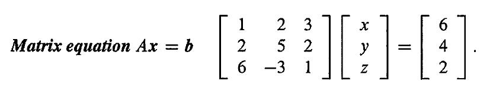
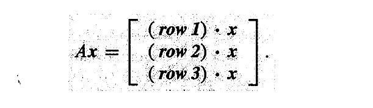
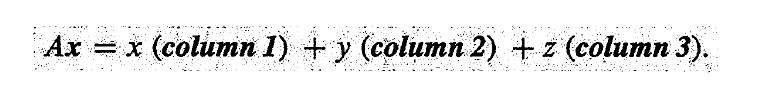
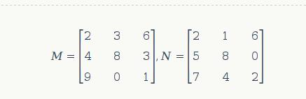
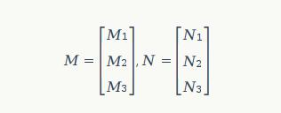
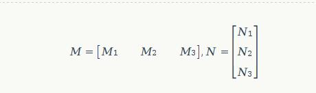
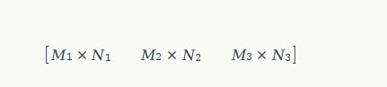

近期在看G.Strang老先生的《Introduction to Linear Algebar,4th Edition》,而今年的想法是把线性代数给学了,逐渐从Python的Web开发工作转向与线性代数相关的工作,虽然当前在公司从事的是大数据分析开发的相关工作,但是其工作大部分内容与概率论和数理统计相关。
在该书的36页提到了矩阵等式Ax=b的问题,有1个相关的问题是这个等式代表什么,其给出我们的答案是可以根据行或列的方式来进行查看。
这里,假设我们有如下1个等式:

对于行,Ax来自点积,每1行乘以列x,即:

而对于列,那么Ax就是1个行向量的组合,如下所示:

说到这里,突然想起实际在2个矩阵相乘的,实际上我们也可以有上述的2种方式来计算其最终的结果。比如,我们有如下的2个矩阵:

现在我们想计算矩阵M与矩阵N的乘积。
如果按照行的角度来查看的话,那就是按照点积的方式来进行计算。此时,我们可以将上面的2个矩阵简化为如下的形式:

而如果按照列的角度来看,那么我们可以上面的矩阵简化为如下的形式:

虽然其计算结果都为:

但是在实现的时候却会发现其代码是不一样的,对于按照行的角度来看的情况,其实现代码如下:
def matrix_mul(M,N):
l = len(M)
c = [[0] * l for i in range(l)]
for i in range(l):
for j in range(l):
for k in range(l):
c[i][j] += M[i][k] * N[k][j]
return c在这里,第1个for循环获取结果矩阵第i行的元素,然后第2个for循环获取结果矩阵第j列的元素,而第3个for循环是矩阵第n行的元素。
而对于按照列的角度来看的话,其实现代码如下:
def matrix_mul(M,N):
l = len(M)
c = [[0] * l for i in range(l)]
for i in range(l):
for j in range(l):
a = M[i]
b = [row[j] for row in N]
for k in range(l):
c[i][j] += a[k] * b[k]
return c相比而言,按照列的角度的代码更容易理解,直接就是矩阵M的第n行与矩阵N的第n列进行相乘的过程。
如果你做测试,会发现这2种方式,按列的形式会稍微快一些。